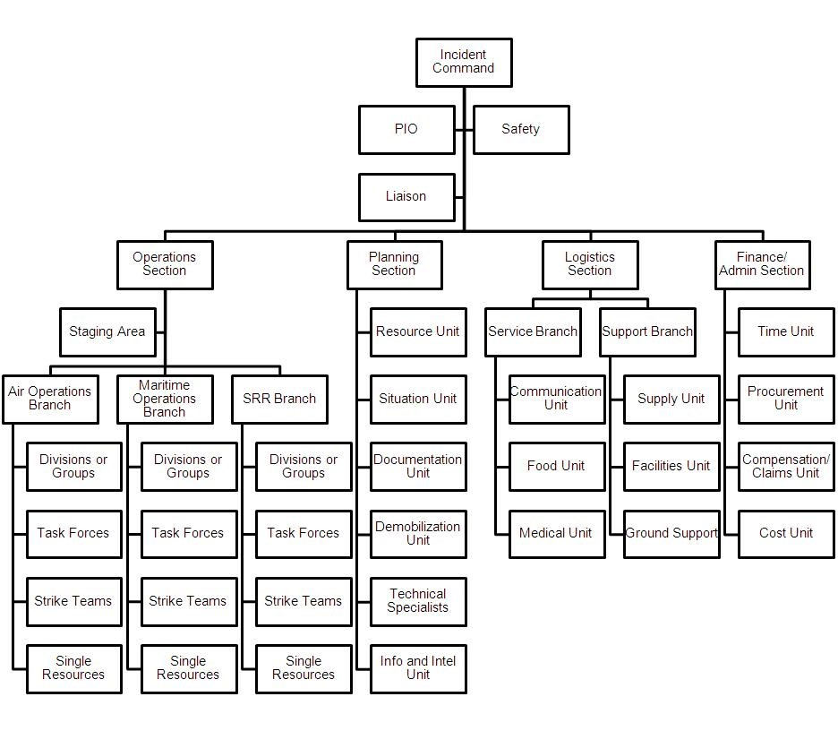
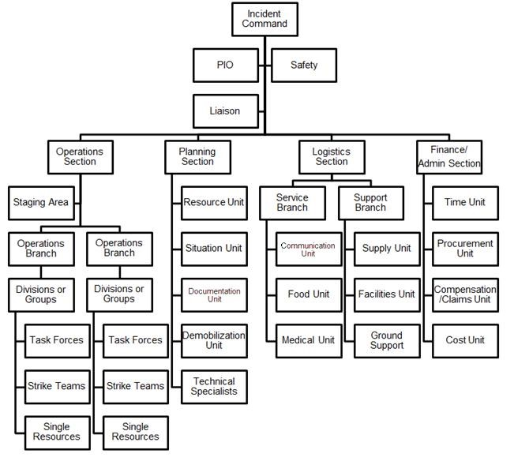
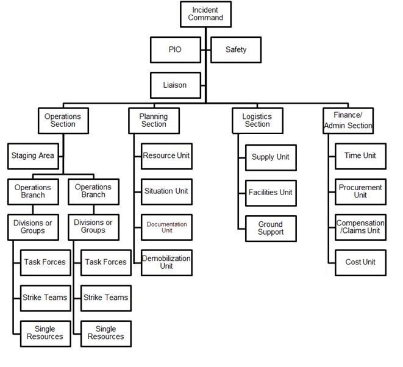
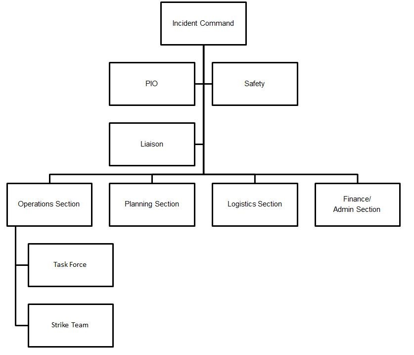
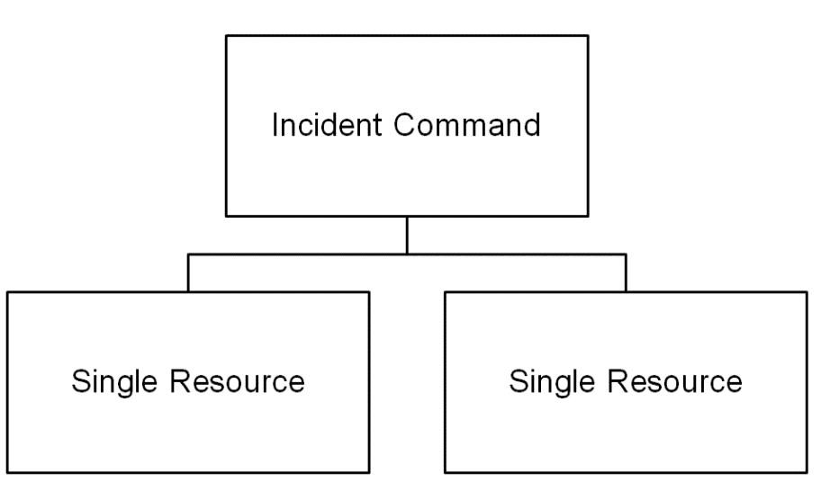

Incident and/or event complexity shall determine emergency and incident response personnel responsibilities. There are five levels of incident complexity:





Types of IMT are based on the proficiency and competency of the members. These types are specified in the NDRRMC Memo Circular No. 4, s 2012.
Type
| IMT |
|---|---|
| Type I and II | National IMT |
| Type III | Regional IMT |
| Type IV | Discipline or large jurisdiction specific |
| Type V | Ad-hoc incident command organizations typically used by smaller jurisdictions |